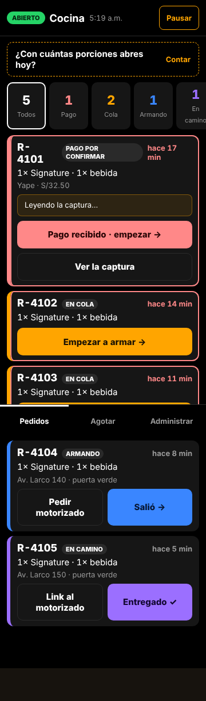
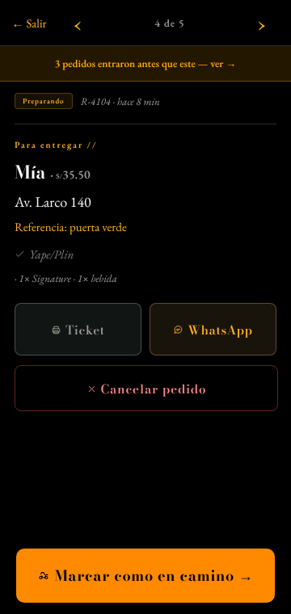
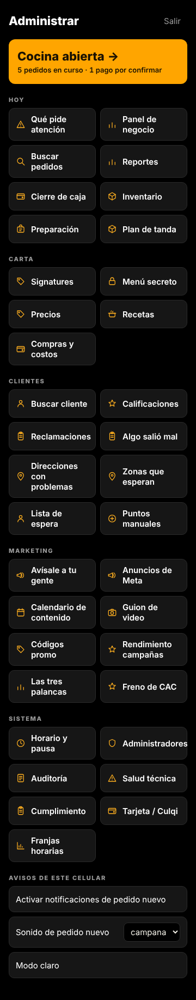

Encargo: «el panel admin necesita una remodelación total para enfocarse en productividad» (2026-10-03). No se reabre lo decidido el 2026-10-01: dos modos, celular primero, sin estado «Listo», el reparto lo hace un tercero por WhatsApp, «no bonito sino funcional y ordenado». Nada de esto está construido.
Capturas reales del panel publicado, a 360 px, con 5 pedidos de muestra.
La riel aprobada. Funciona, pero cada pedido pide sus pasos uno por uno, y «Entregado» se marca a ciegas: el motorizado es de un tercero y no avisa.

La «receta» es la pantalla vieja (otra letra, otro color) y no muestra la receta: solo el resumen. Para seguir hay que volver a la lista.

36 botones en 5 cajones, todos del mismo tamaño. Lo que pide atención es un botón más (el primero), no lo que se ve al entrar.

Pedido con Yape que se confirmó solo (lo normal desde el lector de capturas), de punta a punta, mirando la receta una vez.
| paso | hoy | toques | propuesto (vale para las 3 opciones) | toques |
|---|---|---|---|---|
| empezar | «Empezar a armar» | 1 | Tocar el pedido: se abre su receta y pasa a Armando (un solo gesto: si lo abres, es porque lo vas a armar) | 1 |
| ver la receta | tocar el pedido · volver a la lista | 2 | ||
| pedir motorizado | «Pedir motorizado» · buscar el grupo · tocarlo · enviar · volver a la app | 5 | Desde la receta. Se usa la hoja de compartir del celular, donde el grupo aparece primero por ser el más usado: tocarlo · enviar · volver (vuelves a la misma receta) | 4 |
| salió | «Salió →» | 1 | «Salió →», en la receta y en la lista | 1 |
| entregado | «Entregado ✓», sin saber si se entregó | 1 | Se cierra solo a la hora prometida + 30 min. Si algo falló, el cliente ya tiene «Algo salió mal» | 0 |
| total por pedido | 10 | 6 | ||
Las tres llevan los mismos toques de arriba y el mismo «Abro con N porciones». Cambia el esqueleto: qué ves al abrir, cómo se ordena, dónde quedan las 36 pantallas.
El panel es una sola lista de tareas, la más urgente arriba. No cambia de forma en el día: cambian las tareas. Antes de abrir, la lista dice «cuenta porciones» y «abre»; en servicio, los pedidos; al cerrar, «cierra caja» y «responde 1 reclamo». Administrar deja de ser una grilla: es un buscador y tus 4 pantallas fijadas.
Antes de abrir. Abrir la cocina ES contar porciones: sin eso no hay «Quedan N» para el cliente.
En servicio. La riel de hoy, pero con las tareas de administrar intercaladas por urgencia. Un pedido = una fila = un botón.
Administrar. Ninguna grilla: escribes lo que buscas («precio», «horario», «Larco») y aparece. Fijas las que más usas.
El panel es un recorrido fijo: Abrir · Servicio · Cerrar. El reloj te pone en el momento que toca y cada uno es una lista de pasos que se tachan. Sabes siempre qué falta para terminar el día. Administrar queda detrás de «Más», ordenado por momento.
Abrir. Pasos fijos, siempre en el mismo orden. El último es el botón de abrir.
Servicio. Columnas de la pizarra en pestañas, con el número de cada una. Una pestaña a la vez: solo lo de ese paso.
Cerrar. Lo que hay que hacer antes de irte, y el resumen del día. «Terminar el día» no se activa con pedidos abiertos.
El panel es la mesada: a pantalla completa, el pedido que toca armar con su receta para tachar, y un botón gigante. La cola es una tira arriba. Lo que no pide tus manos (pagos que cuadran, pedidos entregados) no aparece. Administrar se reemplaza por «Tu semana»: cinco números y las decisiones pendientes; el resto, en una lista.
Armando. Cada ingrediente se tacha. El botón de abajo es siempre el siguiente paso.
Esperando motorizado. El pedido queda arriba hasta que sale; mientras, el siguiente ya se puede empezar.
Tu semana. Sustituye la portada de 36 botones: lo que cambió, lo que hay que decidir, y la lista completa abajo.
No hay datos de uso: el registro de acciones del panel solo guarda cambios (4 registros desde julio: 2 cancelaciones, 1 exportación, 1 promo). Propuesta: juntar ahora lo que responde a la misma pregunta y, desde la apertura, anotar cada pantalla que se abre. A las 4 semanas, lo que nadie abrió se discute contigo.
| pantalla nueva | junta |
|---|---|
| (la portada misma) | Qué pide atención |
| Números | Panel de negocio · Reportes |
| Stock y tanda | Inventario · Preparación · Plan de tanda |
| La carta | Signatures · Menú secreto · Precios |
| Clientes y puntos | Buscar cliente · Puntos manuales |
| Lo que dijeron | Calificaciones · Algo salió mal (Reclamaciones queda aparte: es el Libro, legal) |
| Zonas | Direcciones con problemas · Zonas que esperan · Lista de espera |
| Contenido | Calendario de contenido · Guion de video |
| ¿Rinde el marketing? | Rendimiento campañas · Las tres palancas · Freno de CAC |
| Técnico | Auditoría · Salud técnica · Tarjeta / Culqi · Franjas horarias |
| Quedan igual: Buscar pedidos · Cierre de caja · Recetas · Compras y costos · Reclamaciones · Avísale a tu gente · Anuncios de Meta · Códigos promo · Horario y pausa · Administradores · Cumplimiento | |
A, una lista de lo que te toca, con los toques del punto 2.
Lo que necesito que decidas: (1) A, B o C, o una mezcla; (2) ¿«Entregado» se cierra solo a la hora prometida + 30 min?; (3) ¿junto las pantallas como en el punto 4 y empiezo a medir cuáles se abren?